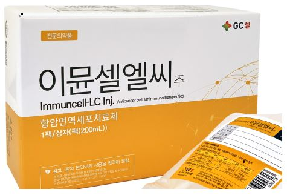
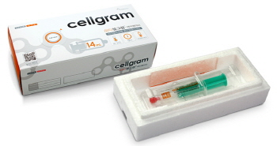

干细胞与细胞治疗
合规优先 · 适应症明确 · 以医生判断为前提的接待路径
在进入具体路径说明之前，我们首先介绍经韩国保健福祉部正式许可的细胞治疗产品。
作为韩国保健医疗体系内合规运作的外籍患者引进机构，汉江春天坚持以法规为前提、以适应症为边界、以医生判断为核心的原则，
仅在官方许可范围内进行沟通与介绍，确保信息真实、透明、可追溯。
我们把“干细胞/细胞治疗”拆成清晰路径：评估 → 选择 → 治疗/管理 → 复盘。
重点只有一个：所有沟通均以韩国法规与许可适应症为前提。
备注：若客户提到“抗衰/逆龄”等诉求，我们只会表达：是否使用治疗方案需由医生根据个体情况判断，并遵循许可适应症与院内合规流程。
合规边界：先把“能做/不能做”说清楚
细胞相关治疗在韩国一般分为两类：
一类是“最小操作”的分离、洗涤等医疗行为；
另一类是经过临床试验并取得正式品目许可的细胞治疗药物。
价格、医保及可开展项目，以各医院制度为准（不同医院之间差异较大）。
韩国已获批细胞治疗产品（示例）
GC绿十字 · 免疫细胞治疗
ImmunCell-LC
适应症：肝细胞癌在特定根治性治疗后、确认肿瘤去除的患者之辅助治疗。
（抗衰用途：仅能表述“需医生判断且遵循许可边界”，不做任何定向宣传。）

(株)Pharmicell · 干细胞治疗
Cellgram-AMI
适应症：急性心肌梗死相关适应症范围内，由医院心血管团队评估后实施。
（抗衰用途：同样仅能表述“医生判断/合规边界”，不做宣传。）

其他（后续页面可扩展）：Cartistem（膝关节软骨/骨关节炎相关）、
Cupistem（克罗恩病复杂性肛周瘘相关）等。
以及分离细胞类项目（如 SVF 等）与院内再生相关项目（例如 “Miracell®（自动化干细胞分离与浓缩系统）” 等），
均需单独说明其法规属性、适应症范围及禁忌事项。
Q&A（按问题逐条回应）
GC绿十字 · ImmunCell-LC 适应症明确
适应症表述原则：只写许可范围内的“肝细胞癌根治性治疗后辅助治疗”。任何“抗衰/逆龄”只能写“由医生判断、遵循合规边界”。
Q1. 当前服务，如何筛选用户？需要做哪些检测？
• 既往诊疗资料：手术/消融记录、影像与病理、肿瘤去除确认等（院方要求为准）。
• 基础评估：生命体征、用药史、过敏史、感染风险评估、肝功能/血常规等（由主治团队决定具体项目）。
• 禁忌/风险：急性感染、严重并发症、医生判断不适合者，不进入流程。
Q2. 如果用户想“抗衰”，是否可以接待？流程怎样？
最多只表达：是否使用治疗方案、是否存在可考虑的医学指征，需由医生在充分评估后决定，并严格遵循许可适应症与院内合规流程。
Q3. 接待一个客户，会有几种角色一起服务？如何分工？
• 主治医生/专科团队：医学评估、方案决策、风险告知、处置与随访。
• 护理/治疗室：采集、给药协助、监测与记录。
• 协调/翻译/接待（外籍患者引进机构侧）：资料收集、预约、同意书签署支持、跨语言沟通与行程衔接。
Q4. 细胞使用流程：是否需要复温/去DMSO？
Q5. 细胞制备：来源、数量/活率、注射频次、有效性数据？
• 细胞来源/制备：按产品说明书与医院可披露材料说明。
• 频次：按许可用法用量与医生判断。
• 有效性：只引用已公开、可核验的临床证据与院内真实世界数据（如院方允许），不做个案夸大。
Q6. 是否发生过医疗事故？
• 不良事件分级与上报机制（院内/法规要求）
• 过敏/感染/血栓等应急处置流程
• 24小时联络与复诊安排
Q7. 价格区间？
对外沟通仅提供“到院评估后报价”，以避免产生误导。
Pharmicell · Cellgram-AMI（Hearticellgram-AMI） 急性心梗相关
沟通原则同上：适应症写清楚；“抗衰”只写“医生判断/合规边界”，不写“抗衰专用”。
Q1. 如何筛选用户？需要做哪些检测？
• 诊断与分层：急性心肌梗死相关评估、心功能（如超声/EF等）、影像与实验室检查（以医院SOP为准）。
• 风险控制：凝血/感染/肾功能、合并症与用药评估；不适合者不进入流程。
Q2. 如果用户想“抗衰”，是否可以接待？流程怎样？
Q3. 接待角色与分工？
• 护理/治疗室：监测、记录与并发症管理。
• 外籍患者引进机构侧：资料准备、翻译、流程衔接、随访沟通。
Q4. 细胞使用流程：复温/去DMSO？
Q5. 细胞制备、频次与有效性数据？
• 频次：遵循许可用法用量与医生判断。
• 数据：仅引用可核验的公开临床与真实世界证据；不进行夸大式“保证效果”表达。
Q6. 医疗事故与应急？
Q7. 价格/是否可申报（医保）？
对外统一口径（简短版）
• 适应症：以韩国相关品目许可范围及医院内部SOP为准。
• 抗衰诉求：只说“医生判断/合规边界”，不做“抗衰定制”话术。
• 安全：先评估、再进入流程；不适合者不做。
• 报价：到院评估后出正式方案与报价（院方制度差异大）。
资料可引用与转载，请注明出处：来源：汉江春天